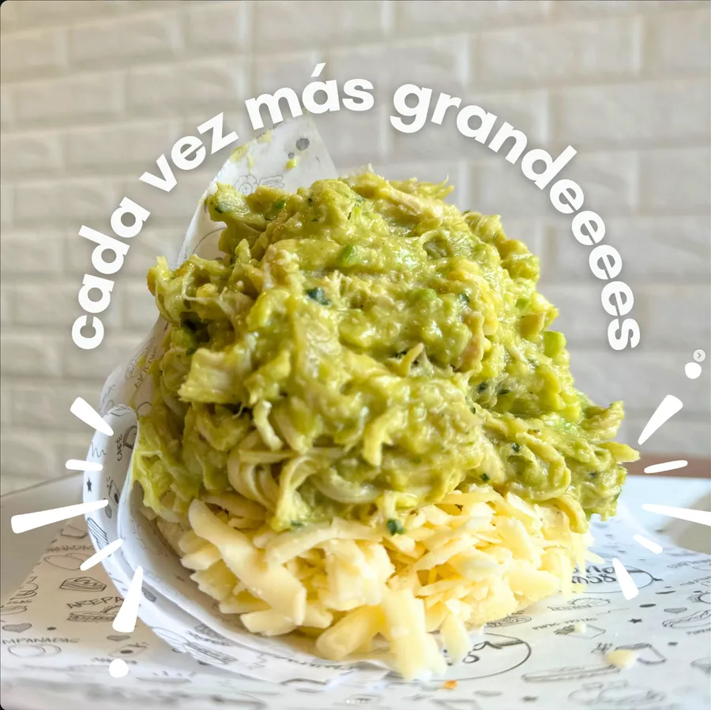
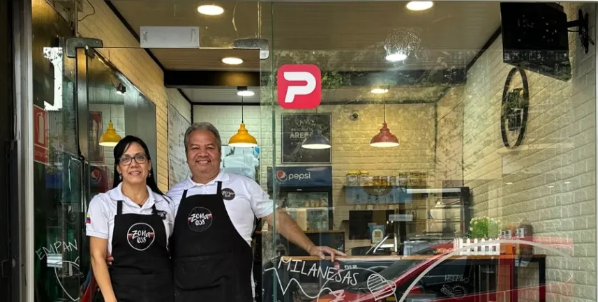
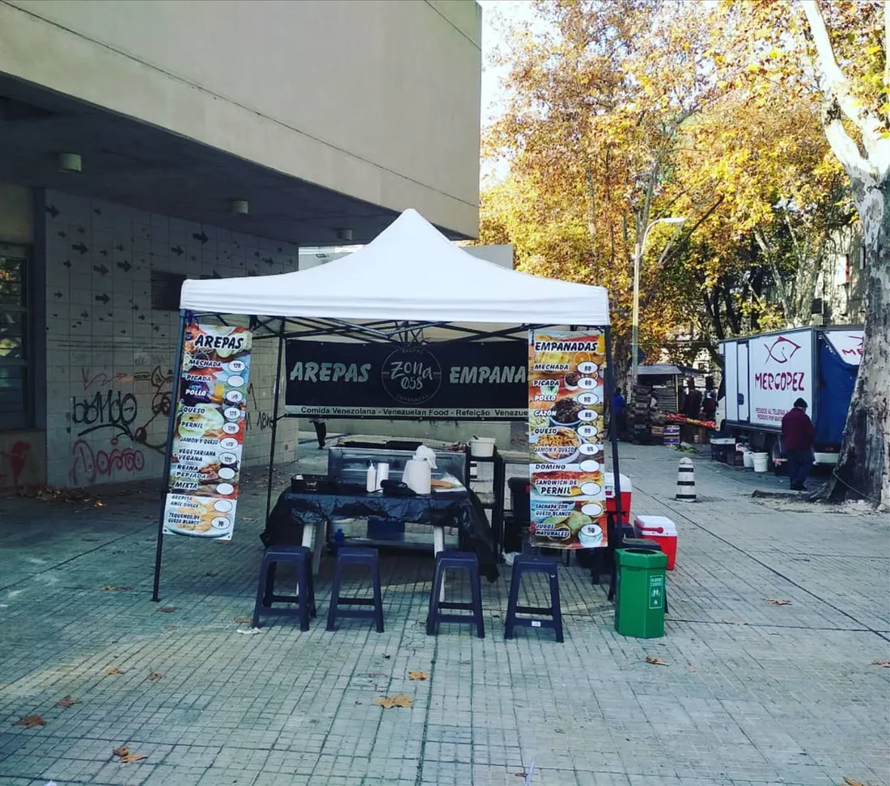
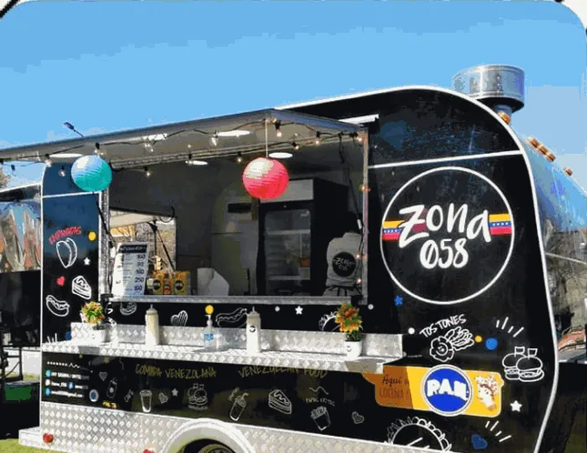
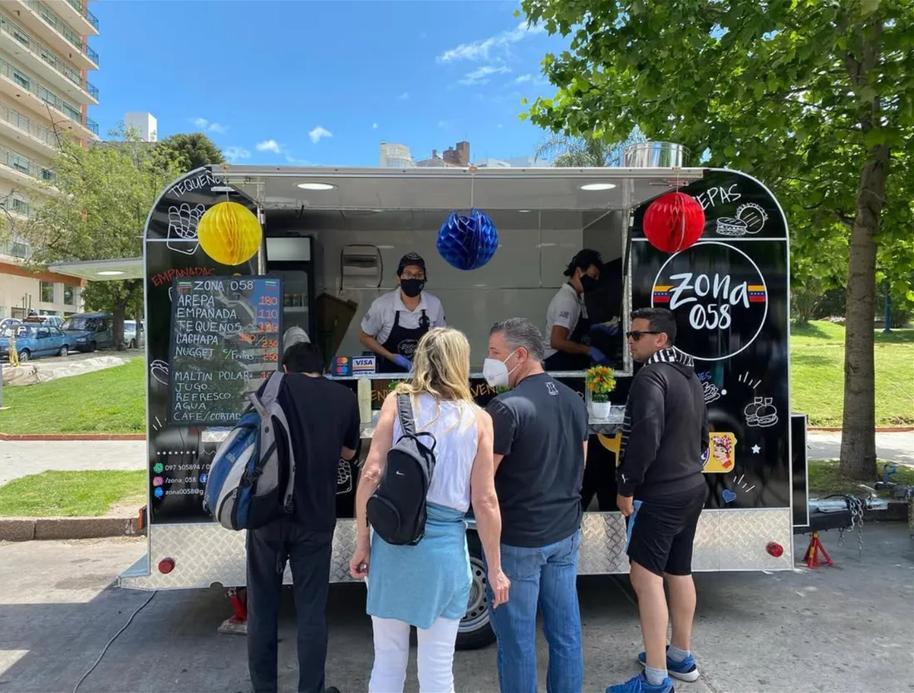
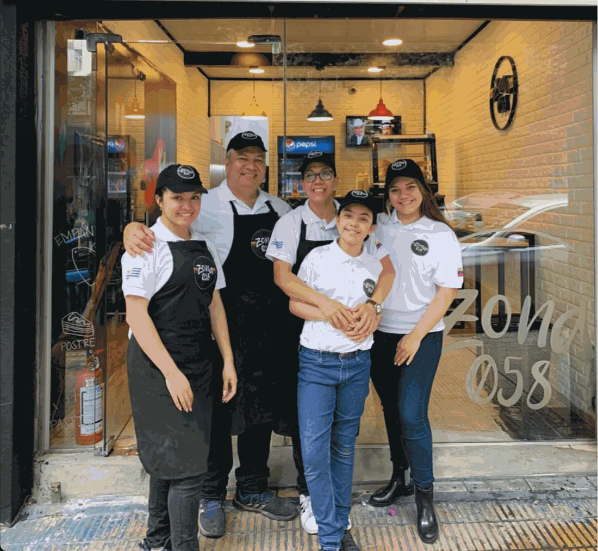
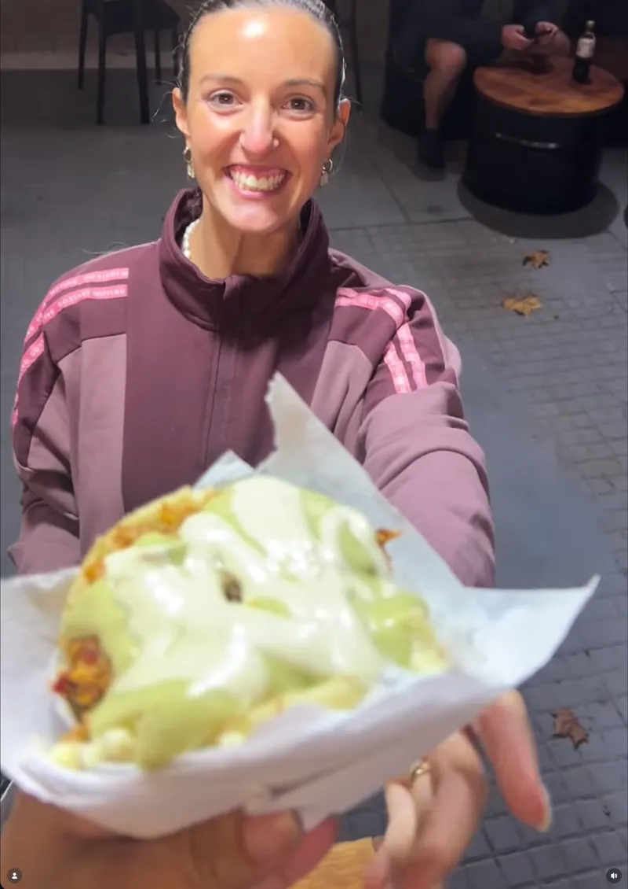

01 · Local
El Patio
Para comer acá, con mesas al aire libre, o para llevar. Constituyente 2012.
Ver horarios →
Pedir onlineDesde 2016 en Uruguay [confirmar año]
Arepas grandes con muuucho relleno, empanadas, tequeños y cachapas. Hechos a mano por Salo, Ale y su familia.
Delivery o retiro en el Patio, desde nuestra página de pedidos. [confirmar]


Quiénes somos
Seguramente nos viste detrás del mostrador o en nuestros foodtrucks, dándote a elegir los platos y contagiándote un poquito de nuestra energía.
Llegamos de Venezuela con las recetas de la familia y una idea: que en Montevideo se pudiera comer una arepa como las de casa. Diez años después seguimos cocinando juntos, ahora con nuestros hijos y un equipo que es familia.
[validar este texto con ellos]
Comentarios de clientes en @zona_058 [pedir permiso o usar reseñas de Google]
La ruta 058
El 058 es el código de Venezuela. Lo trajimos con nosotros y lo fuimos llevando, feria por feria, hasta acá.
Llegamos con la receta de casa y los domingos empezamos a vender las primeras arepas. [confirmar]

Carpa, banquitos y carteles hechos por nosotros. Cada sábado en Calle Salto, armando y desarmando todo.

Volvimos a Tristán Narvaja con ruedas propias, en el lugar de siempre.

Villa Biarritz, Calle Salto, Tristán Narvaja, Parque Rodó y eventos de empresas.

Una casa con puerta propia, hecha con la familia y con muchos amigos y clientes.

Nueva casa en Constituyente 2012. Mientras la terminamos, el foodtruck espera en la puerta.
Producir en Montevideo para llegar a más mesas, comercios y eventos.
Unidades de negocio
Cuatro formas de llevar Zona 058 a tu mesa, a tu feria o a tu evento.
01 · Local
Para comer acá, con mesas al aire libre, o para llevar. Constituyente 2012.
Ver horarios →02 · Foodtrucks
Todos los domingos en Tristán Narvaja, en el lugar de siempre. [¿otras ferias?]
Dónde estamos →03 · Eventos
Cumpleaños, empresas, casamientos y ferias. Vos ponés la gente, nosotros las arepas.
Cotizar mi evento → [¿mail o formulario?]04 · Fábrica Próximamente
Producción propia para comercios, mayoristas y congelados. [confirmar qué van a vender]
Seguinos para enterarte →Dónde estamos
Pedila ahora y en un rato la tenés en la mano.
Pedir online